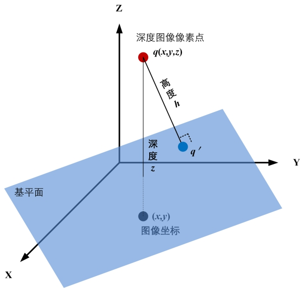
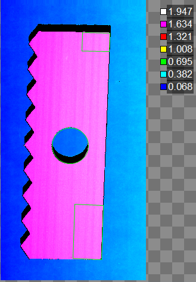
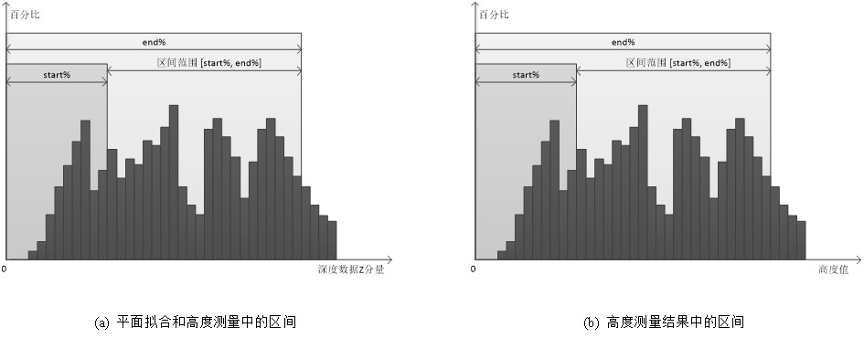

在3D测量中，高度测量工具主要是获取输入点集或深度图像中检测区域内三维空间点到指定基平面的高度距离，并完成高度最小值、最大值、均值、中值等高度信息的统计，帮助用户更加精确的获取高度距离的分布情况。一个三维点（深度图像像素点）到基平面的高度如图1所示。

图2所示为高度测量工具示意图。在高度测量工具中，支持单ROI模式和多ROI模式，且可以对高度测量区域的形状和特征等进行配置。如图2所示，总共有三个测量区域，这个两个区域的形状分别为矩形、仿射矩形、圆，且可以分别测量这三个区域内的特征点（如均值、中值等）或者所有数据到基平面的高度值的统计信息。

| 参数名称 | 参数描述 |
|---|---|
| 深度图像 | 显示待检测的深度图像，显示为伪彩色图像。 |
| 基平面 | 选择高度测量的基准平面。 |
| 二维线性变换 | 目标相对于模板的平移、旋转、缩放变换。 |
| 模式 | 分为三种：单ROI模式、多ROI模式、点集模式 |
| 计算取反 | 当选择“是”时，高度计算值符号取反，主要应用于凹槽、厚度等向下计算高度为正的场合。 |
| 系数补偿 | 测量结果系数补偿，一般为1，用于补偿成像等系统误差。 |
| 固定补偿 | 测量结果固定补偿，一般为0，用于补偿成像等系统误差。 |
| 高度最大值上限 | 取值范围为[-100, 100]，且下限应小于等于上限。 |
| 高度最大值下限 | 取值范围为[-100, 100]，且下限应小于等于上限。 |
| 高度最小值上限 | 取值范围为[-100, 100]，且下限应小于等于上限。 |
| 高度最小值下限 | 取值范围为[-100, 100]，且下限应小于等于上限。 |
| 高度均值上限 | 取值范围为[-100, 100]，且下限应小于等于上限。 |
| 高度均值下限 | 取值范围为[-100, 100]，且下限应小于等于上限。 |
| 高度中值上限 | 取值范围为[-100, 100]，且下限应小于等于上限。 |
| 高度中值下限 | 取值范围为[-100, 100]，且下限应小于等于上限。 |
| 单ROI类型 | 待检测区域，分为7种：整幅图像、矩形、仿射矩形、圆形、圆环、椭圆、多边形。 |
| 启用掩膜 | 是否启用掩膜，选择“是”，显示掩膜个数、掩膜序号、掩膜形状等参数。 |
| 掩膜个数 | 设置启用的掩膜个数，取值范围为[1, 99]。 |
| 掩膜序号 | 当前欲设置的掩膜索引。 |
| 掩膜类型 | 当前欲设置的掩膜形状，分为6种：矩形、仿射矩形、圆形、圆环、椭圆、多边形。 |
| 低尾部分数 | 计算低尾部的比例参数，取值范围为[0,1]，且高低尾部分数之和小于等于1，参考监视窗口低尾部参数。 |
| 高尾部分数 | 计算高尾部的比例参数，取值范围为[0,1]，参考监视窗口低尾部参数，且高低尾部分数之和小于等于1，参考监视窗口高尾部参数。 |
| 启用高度范围过滤器 | 选择“是”，则对计算得到的高度数据根据高度范围进行过滤，并显示高度范围下限和高度范围上限参数。 |
| 高度范围的下限 | 高度范围的下限，且高度下限应小于等于高度上限，根据高度范围对计算得到的高度数据进行过滤。 |
| 高度范围的上限 | 高度范围的上限，且高度下限应小于等于高度上限，根据高度范围对计算得到的高度数据进行过滤。 |
| 包含高度范围内的值 | 选择“是”，则包含高度范围内的值，否则为排除高度范围内的值。 |
| ROI数量 | 该参数用于指定测量区域的数量，最多支持100个ROI。 |
| ROI索引 | 该参数用于选择第i个测量区域，并对其参数进行设置。 |
| 多ROI类型 | 待检测区域，分为7种：整幅图像、矩形、仿射矩形、圆形、圆环、椭圆、多边形。 |
| 相同属性 | 选择“是”，同步所有ROI的大小、形状、区间上下限、结果区间上下限 |
| 测量点特征 | 选取ROI区域内的某种特征点进行高度测量，分为6种：均值、中值、质心、Z最大、Z最小、所有数据。 |
| 区间上、下限 | 测量区域的深度数据按照Z分量从小到大排序，然后再获取位于start% ~ end%的深度数据的均值，中值等特征点。取值范围为下限[0,100)，上限(0,100]，且下限小于上限。 |
| 结果区间上、下限 | 测量结果的高度值从小到大排序，然后再获取位于start% ~ end%的高度值的均值，中值等特征点。取值范围为下限[0,100)，上限(0,100]，且下限小于上限。 |
| 统计结果区间上、下限 | 所有ROI区域测量的高度结果从小到大排序，然后再获取位于start% ~ end%的高度值的均值，中值等特征点，用于整体测量结果的统计输出。取值范围为下限[0,100)，上限(0,100]，且下限小于上限。 |
| 统计高度最大值上限 | 取值范围为[-100, 100]，且下限应小于等于上限。 |
| 统计高度最大值下限 | 取值范围为[-100, 100]，且下限应小于等于上限。 |
| 统计高度最小值上限 | 取值范围为[-100, 100]，且下限应小于等于上限。 |
| 统计高度最小值下限 | 取值范围为[-100, 100]，且下限应小于等于上限。 |
| 统计高度均值上限 | 取值范围为[-100, 100]，且下限应小于等于上限。 |
| 统计高度均值下限 | 取值范围为[-100, 100]，且下限应小于等于上限。 |
| 统计高度中值上限 | 取值范围为[-100, 100]，且下限应小于等于上限。 |
| 统计高度中值下限 | 取值范围为[-100, 100]，且下限应小于等于上限。 |
| 参数名称 | 参数描述 |
|---|---|
| 深度图像 | 图像的长宽和像素大小，以及深度数据参数。 |
| 均值 | 高度数据的平均高度值。 |
| 中值 | 将高度数据排序后，位于中间位置的高度数据。 |
| 最小值 | 高度数据中最小高度数值。 |
| 最大值 | 高度数据中最大高度数值。 |
| 低尾部 | 使得小于某数值的数据量达到指定比例（低尾部分数）的高度数值。 |
| 高尾部 | 是的大于某数值的数据量达到指定比例（高尾部分数）的高度数值。 |
| 区域边界框内像素数目 | 感兴趣区域的最小外接矩形内像素（包含无效像素）的数目。 |
| 关注像素数目 | 感兴趣区域形状内像素（包含无效像素）的数目。 |
| 可见关注像素数目 | 感兴趣区域形状内有效像素的数目。 |
| 所用像素数目 | 感兴趣区域内实际用于高度测量的像素数目。 |
| 高度测量结果 | 显示每个测量区域的高度测量结果，包括每个测量区域内的高度最大值、最小值、均值、中值，以及所有测量区域测量结果的统计结果。 |
| 高度最大值 | ROI中高度最大值输出，最后一位为统计结果最大值。 |
| 高度最小值 | ROI中高度最小值输出，最后一位为统计结果最小值。 |
| 高度均值 | ROI中高度均值输出，最后一位为统计结果均值。 |
| 高度中值 | ROI中高度中值输出，最后一位为统计结果中值。 |
| ROI判定结果 | 各个ROI高度测量值判定结果。 |
| 执行结果 | 工具执行结果。 |
| 执行时间 | 工具执行时间。 |
基平面的设置其实就是在深度图像上选择一个感兴趣区域以获取三维数据点，然后根据平面方向和拟合方法执行平面拟合。默认情况下，基平面为XOY平面。
设区间范围为[start%, end%]，则只有位于区间范围内的数据才是有效的；如图3(a)所示，当对测量区域进行参数配置时，将区域内的深度数据按照Z分量从小到大进行排序，然后再获取位于start% ~ end%的深度数据的均值，中值等特征点；如图3(b)所示，在高度测量结果中时，将高度值按照从小到大进行排序，然后再获取位于start% ~ end%内的高度值的均值，中值等。

Step 1 设置测量区域及掩膜
为了获取三维空间点数据需要设置测量区域及掩膜，其中，测量区域形状支持圆、椭圆、多边形、矩形、仿射矩形或圆环段等六种设置，掩膜支持任意数量的圆、椭圆、多边形、矩形、仿射矩形和圆环段等六种区域设置；此时，高度测量使用的是测量区域形状内除去掩膜区域的三维空间点数据。
Step 2 设置直方图统计
设置直方图统计主要包括：设置参数与设置高度范围过滤器。设置参数是对低尾部分数、高尾部分数和StdDev系数三个参数进行设置。设置高度范围过滤器主要是对计算得到的高度数据进行过滤，可以指定一个高度范围，并确定高度范围滤波模式是包含高度范围内的值还是排除高度范围内的值。
Step 3 执行测量与输出结果
获取三维空间点数据后，执行测量可以得到高度数据，并完成高度信息的统计，输出高度直方图、最小值、最大值、均值、中值、标准差、低尾部和高尾部等结果，以及像素计数结果。
Step 4 补偿和结果判定
若需要对计算结果进行补偿或者判定的话，可以对系数补偿、固定补偿、判定依据、最大值、最小值进行设置。
Step 1 测量区域的参数设置
主要需要对测量区域的个数、形状、区域内的特征点类型和区间的范围进行设置。其中，用户可自行指定测量区域的数量；测量区域的形状分为7种：整幅图像、矩形、仿射矩形、圆形、圆环、椭圆、多边形；测量区域内的特征点类型分为6种：均值、中值、质心、Z最大、Z最小、所有数据。
Step 2 高度测量结果的参数设置
接着需要对每一个测量区域的高度测量结果的参数进行设置。需要设置的参数有：区间范围。用户可根据实际的项目需求对这些参数进行设置。
Step 3 执行高度测量和输出结果
在上述步骤之后，就可以执行高度测量。高度测量的输出结果主要包括：每一个测量区域内的高度特征值（最大值，最小值，均值、中值）以及所有测量区域内高度特征值的一个统计结果。
Step 4 补偿和结果判定
若需要对计算结果进行补偿或者判定的话，可以对系数补偿、固定补偿、判定依据、最大值、最小值进行设置。
Step 1 设置输入点集合
数据链接输入三维点集或脚本设置数据链的三维点集。
Step 2 设置直方图统计
设置直方图统计主要包括：设置参数与设置高度范围过滤器。设置参数是对低尾部分数、高尾部分数和StdDev系数三个参数进行设置。设置高度范围过滤器主要是对计算得到的高度数据进行过滤，可以指定一个高度范围，并确定高度范围滤波模式是包含高度范围内的值还是排除高度范围内的值。
Step 3 执行测量与输出结果
获取三维空间点数据后，执行测量可以得到高度数据，并完成高度信息的统计，输出高度直方图、最小值、最大值、均值、中值、标准差、低尾部和高尾部等结果，以及像素计数结果。
Step 4 补偿和结果判定
若需要对计算结果进行补偿或者判定的话，可以对系数补偿、固定补偿、判定依据、最大值、最小值进行设置。
参见“\Samples\3D\深度图\通用高度测量工具.gvp”。